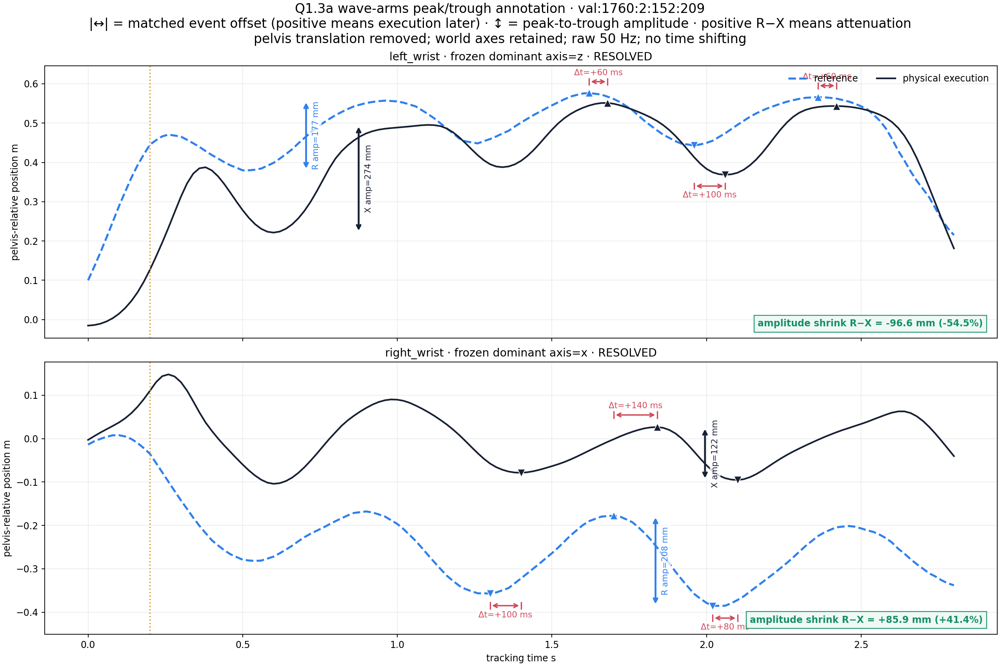

Research Definition · Result 001 · 22 July 2026
Where physical motion tracking falls behind its reference
A visual audit of 15 representative G1 motion clips finds that fast, continuously changing actions expose local timing delay, asymmetric amplitude changes, and wrist-level errors hidden by whole-body averages.
15 representative clips
Frozen SONIC
Zero residual
Analysis draft
Primary finding
The failure is local and action-dependent.
Evidence overview
Whole-body scores are not enough.
Wave arms shows the clearest sustained delay and asymmetric wrist amplitude. High-V kick exposes arm delay more strongly than leg delay. Handshake demonstrates how a moderate whole-body score can conceal a concentrated wrist error. Dynamic walk acts as a negative visual anchor: the metric moves, but the overlay remains subtle.
Inspect the complete result
Publication standard
Evidence before narrative
InspectabilityRepresentative media and quantitative plots live with the claim.
ScopeClaims remain bounded to the tested clips, controller, and evaluation protocol.
UncertaintyDraft analysis and provisional proxies remain visibly labeled.
IndependenceEvery public asset is hosted here; no private source or token is required.